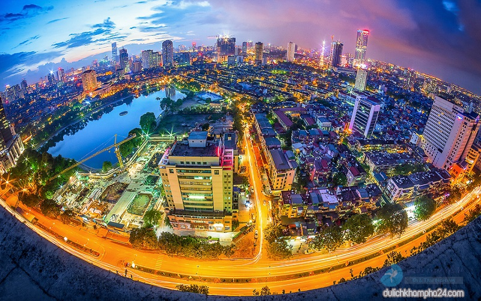
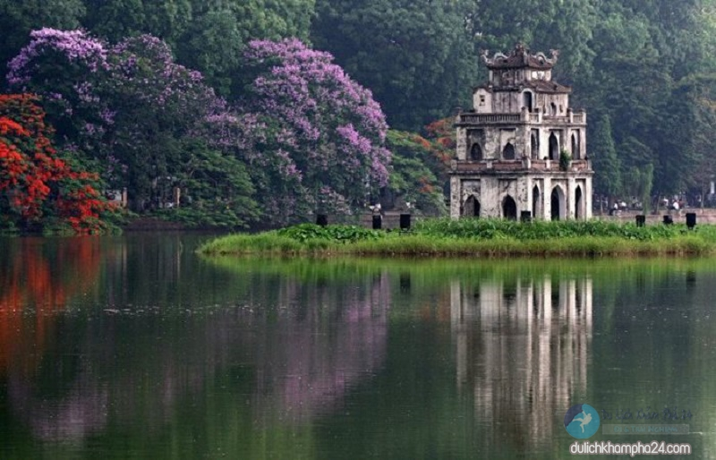
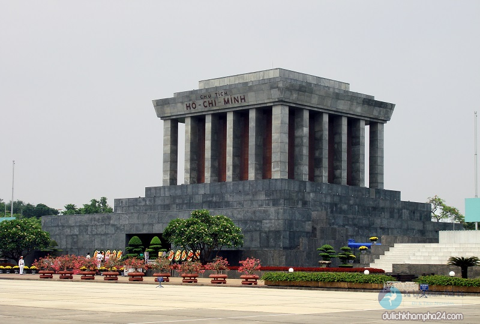
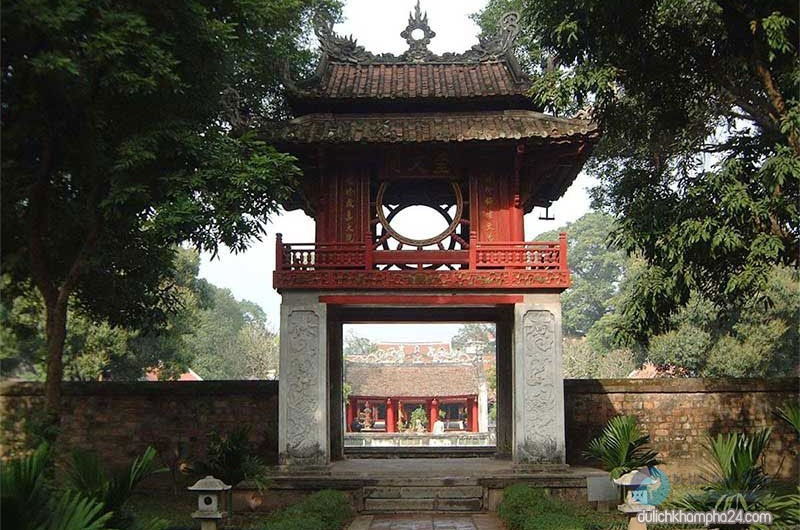
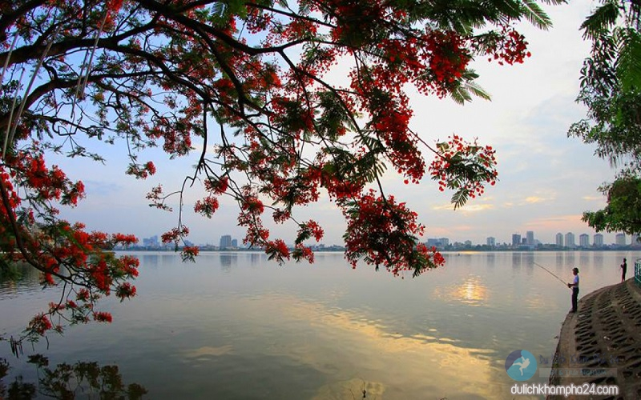
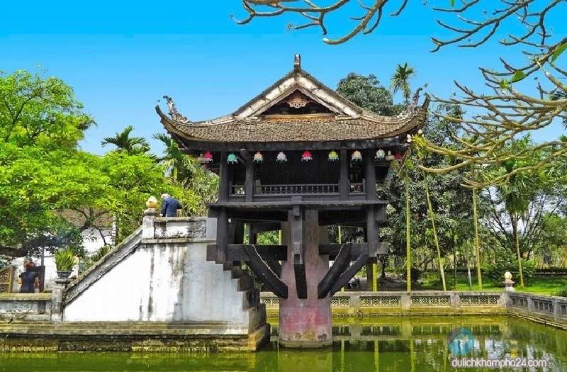

Hẳn bạn đã nghe rất nhiều về Hà Nội – Thủ đô hơn 1000 năm tuổi. Không chỉ nổi tiếng với lịch sử lâu đời,
giàu bản sắc, văn hóa truyền thống dân tộc, vùng đất này còn được biết đến là một trong những địa điểm
thu hút nhiều du khách trong và ngoài nước. Với bài viết giới thiệu về Hà Nội này, chắc chắn bạn sẽ yêu
ngay những thứ mà nó có, từ văn hóa, phong tục tập quán, con người, nhịp sống cho đến cảnh vật và cả nền
ẩm thực hấp dẫn mà không nơi nào có được.
Giới thiệu về Hà Nội – Vị trí và đặc điểm kiểu khí hậu
Hà Nội nằm ở tả ngạn sông Đà và hai bên đồng bằng sông Hồng. Phía Bắc giáp với tỉnh Vĩnh Phúc và Thái
Nguyên, phía Nam giáp tỉnh Hòa Bình, phía Đông giáp với tỉnh Bắc Ninh và Hưng Yên, còn phía Tây giáp
tỉnh Vĩnh Phúc. Sau khi được mở rộng, Hà Nội nằm trong top 17 Thủ đô có diện tích lớn nhất thế giới với
3.324,92 km2. Với vị trí địa lý thuận lợi này, thành phố này dễ dàng trở thành trung tâm kinh tế – chính
trị, văn hóa, khoa học quan trọng của cả nước. Hiện tại, bao gồm 12 quận, 1 thị xã và 17 huyện.

Do có kiểu khí hậu nhiệt đới gió mùa ẩm nên đến du lịch Hà Nội, bạn có thể thưởng thức đủ 4 mùa trong
năm. Mỗi mùa đều có những đặc trưng riêng, cho bạn những cảm nhận khác nhau về cuộc sống, về cảnh vật và
con người nơi đây. Hà Nội vào đông lạnh thì cũng lạnh lắm, vào hè nóng thì cũng nóng lắm nhưng không vì
thế mà mất đi cái đẹp. Song có lẽ, đặc biệt nhất vẫn là mùa xuân, là mùa thu Hà Nội.

Giới thiệu về Hà Nội – Những danh lam thắng cảnh nổi tiếng
Lăng Chủ tịch Hồ Chí Minh
Lăng Chủ tịch Hồ Chí Minh là nơi giữ gìn thi hài Bác – người cha già kính yêu của dân tộc. Lăng được
khởi công xây dựng vào ngày 2/9/1973 và hoàn thành vào ngày 19/8/1975. Công trình ngày cao 21,6 m,
rộng 41,2 m, được làm hoàn toàn bằng nhiều loại đá quý hiếm khác nhau. Nhìn tổng thể, lăng như một
bông hoa sen cách điệu. Lăng trở thành một điểm đến nổi tiếng mà bất kỳ ai khi đến du lịch Hà Nội
đều muốn ghé thăm. Đến đây du khách không chỉ được chiêm ngưỡng kiến trúc đặc biệt này mà còn được
tận mắt nhìn thấy Bác đang yên giấc ngủ.

Văn Miếu – Quốc Tử Giám
Đây vốn là trường học cổ của Kinh Thành Thăng Long và trường đại học đầu tiên ở Đông Nam Á. Văn Miếu
không chỉ là một di tích lịch sử, văn hóa cổ mà còn là nơi diễn ra các hoạt động, sự kiện đậm đà bản
sắc của người dân Thủ đô. Bên trong còn lưu giữ nhiều hiện vật quý như: chuông Bích Ung đại chung,
tường Khổng Tử 82 bức bia ghi tên những người đỗ Tiến sĩ,… Nếu bạn là người yêu thích lịch sử Hà Nội
và muốn tìm hiểu về văn hóa học thời xưa thì đây là một địa điểm lý tưởng.

Hồ Tây – mặt gương của Hà Nội
Hồ Tây có diện tích rộng hơn 500 ha với bề dày lịch sử mấy nghìn năm. Cùng với hồ Trúc Bạch, Hồ Tây
góp phần làm nên chất thơ cho thành phố. Theo mình thì, nếu dạo một vòng quanh hồ, bạn sẽ được thăm
thú kha khá các di tích và thắng cảnh. Làng Nhật Tân với hoa đào nợ rộ khi xuân về, làng Xuân Tảo
với Sóc thờ Thánh Gióng, làng làm giấy cổ tích Kẻ Bưởi,… và một số công trình được xây dựng quanh hồ
làm quanh cảnh thêm đa dạng.

Chùa Một Cột – ngôi chùa có kiến trúc độc đáo nhất
Khi giới thiệu về Hà Nội người ta sẽ nghĩ ngay đến hình ảnh ngôi chùa Một Cột. Ngôi chùa như một biểu
tượng, gây thu hút với kiểu kiến trúc độc đáo với ngôi chùa hình vuông, mái cong, dựng trên cột đá
hình trụ, trên một hồ nước phủ đầy sen. Công trình tuy nhỏ thôi nhưng vẫn có lối để bạn đi lên Phật
đài thắp hương.
